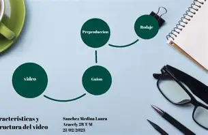
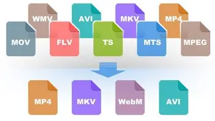

Edicion de Video
Composicion del video
La composición en video es un proceso esencial que implica la organización y el arreglo de elementos visuales dentro de un encuadre. Este aspecto técnico y artístico es uno de los pilares fundamentales para crear un contenido atractivo y efectivo. La forma en que se distribuyen y se conectan los diferentes elementos dentro de una escena puede cambiar drásticamente el mensaje que se transmite y la emoción que evoca en la audiencia.
Cada componente dentro del cuadro cumple una función específica en la narrativa visual. Es fundamental saber qué elementos son relevantes y cómo interactúan entre sí. Estos elementos incluyen:

Formato de Video
Los formatos de video son estándares que determinan cómo se codifica y almacena la información de video en un archivo digital, y su elección es crucial para la calidad y compatibilidad del contenido.
¿Qué es un Formato de Video?
Un formato de video se refiere a la manera en que se almacena la información de un video en dispositivos digitales. Cada formato de video tiene dos componentes principales: el códec y el contenedor.
Codec
Un códec es un programa o dispositivo que se utiliza para codificar y decodificar datos digitales, especialmente en formatos de audio y video, permitiendo su compresión y descompresión para facilitar su almacenamiento y transmisión.
¿Qué es un Códec?
Un códec, que es la contracción de "codificador-decodificador", es un software o hardware que permite la codificación y decodificación de señales o flujos de datos digitales. Su uso es común en la compresión de audio y video, lo que permite que los archivos multimedia ocupen menos espacio y se transmitan de manera más eficiente.
Formatos de Video
Importancia de Elegir el Formato Correcto
Elegir el formato adecuado es crucial porque cada plataforma o dispositivo tiene requisitos específicos. Un formato incorrecto puede resultar en pérdida de calidad, incompatibilidad en la reproducción o archivos demasiado grandes para compartir fácilmente. Por lo tanto, es importante considerar el uso previsto del video al seleccionar un formato.

Screencast
¿Qué es screencast?
Un screencast es un vídeo que graba lo que estás viendo en la pantalla de tu dispositivo, sea el ordenador, la tablet o el móvil. Es como una captura de pantalla prolongada. Un screencast puede incluir o no sonido, y es la forma más sencilla, eficaz y rápida de compartir lo que estás viendo. El screencast permite compartir ideas y conocimientos de forma visual y muy efectiva. Si te dedicas a la educación o al training profesional, si sueles crear tutoriales en tu blog, si quieres mostrar el funcionamiento de un producto o servicio, un screencast te resultará de gran ayuda.
Streaming
El streaming es una tecnología que permite la reproducción de contenido multimedia en tiempo real a través de internet. En lugar de descargar el archivo completo antes de poder verlo o escucharlo, el streaming permite que el contenido se transmita de forma continua a medida que se va reproduciendo, lo que permite un acceso instantáneo y una experiencia de visualización o audición más fluida. Esto significa que puedes disfrutar de tus películas, series, música y videojuegos favoritos sin tener que esperar a que se descarguen por completo en tu dispositivo. Concepto
El funcionamiento del streaming se basa en la compresión y descompresión de datos. Cuando reproduces un video o una canción en una plataforma de streaming, el archivo original se divide en pequeños fragmentos y se comprime utilizando algoritmos de compresión, como la compresión de video H.264 o la compresión de audio MP3. Estos fragmentos se transmiten a través de internet y se van descomprimiendo y reproduciendo en tiempo real en tu dispositivo a medida que los recibes.

Transmisión
La transformación digital ha revolucionado la forma en que las empresas operan. La capacidad de transmitir grandes volúmenes de datos a alta velocidad permite a las organizaciones optimizar procesos, mejorar la toma de decisiones y ofrecer servicios personalizados a sus clientes. Las tecnologías de transmisión de datos son cruciales para el desarrollo de soluciones innovadoras que propicien un crecimiento sostenible y competitivo.
Planos de video
os tipos de planos no solo son teóricos; en la práctica, pueden observarse en numerosos ejemplos cinematográficos. Un claro uso del plano general se puede ver en la película “Mad Max: Furia en el camino”, donde se utilizan amplios paisajes desérticos para establecer la atmósfera de la historia. Un ejemplo de primer plano efectivo se encuentra en “El silencio de los inocentes”, donde los primeros planos de la actriz Jodie Foster resaltan su humanidad en medio del horror.
En situaciones dramáticas, los primeros planos se utilizan a menudo para captar la tensión emocional, tal como en “Cisne negro”, que emplea estos planos para reflejar la lucha interna del personaje principal. Otro gran ejemplo de cómo el plano medio permite un diálogo fluido es “Friends”, donde las interacciones se desarrollan entre personajes de forma natural, equilibrando el contexto y el enfoque en sus rostros.
PAGINA PRINCIPAL